Start
Skydda dig mot vinterns smittor
Under vinterhalvåret sprids många smittsamma sjukdomar. Du kan minska risken att bli smittad och att smitta andra genom att följa våra råd.
Hitta snabbt
-

Hitta statistik
Utforska aktuell statistik inom våra områden. -
Läs publikationer
Här hittar du våra rapporter, publikationer och föreskrifter. -

Sjukdomsutbrott
Hitta information om pågående utbrott som vi vill informera särskilt om.
Nyheter
-
Från vision till handling – fortsatt satsning på psykisk hälsa
Publicerad:Under den gemensamma strategin ”Det handlar om livet” samlar 28 myndigheter över 100 konkreta insatser som ska genomföras de kommande tre åren för att förbättra den psykiska hälsan i befolkningen.
-
Nu har säsongen för vinterkräksjuka startat
Publicerad:Epidemin för vinterkräksjuka har startat för säsongen, och antalet fall förväntas öka den närmaste tiden. Viruset som orsakar vinterkräksjuka är mycket smittsamt.
-
Nytt kunskapsunderlag om allvarliga streptokockinfektioner
Publicerad:Ett nytt kunskapsunderlag från Folkhälsomyndigheten sammanfattar den aktuella kunskapen om iGAS, allvarliga infektioner orsakade av grupp A-streptokocker.
-
Enkätundersökning om spel om pengar i Norden
Publicerad:Tillsammans med Spelinspektionen och myndigheter i övriga nordiska länder genomför Folkhälsomyndigheten en undersökning om spel om pengar. Undersökningen sker samtidigt i alla länderna och går ut till 30 000 personer.
Kalender
-
TBE-dag 2026
Välkommen till årets TBE-dag! Här möts smittskyddsenheter, experter och andra intresserade aktörer för att dela erfarenheter och diskutera aktuella frågor. Tillsammans skapar vi en starkare kunskapsbas för att förebygga och hantera TBE.
-
Så skapar vi ett arbetsliv där fler kan delta och må bättre
Varmt välkommen till ett webbinarium om hur vi utvecklar ett hållbart arbetsliv där fler kan delta.
-
Save the date, Webbinarium: När omgivningen väljer – om hälsa och våra ungas omvärld
Mat och rörelse är grundläggande för våra barns hälsa och välbefinnande. Förutsättningar som finns runt barn och unga formar möjligheten till val som påverkar deras hälsa och risk för utveckling av icke-smittsamma sjukdomar så som cancer och hjärtkärlsjukdom senare i livet.
-
Webbinarium: Legionella i kyltorn
Är du som är miljö- och hälsoskyddsinspektör intresserad av hur tillsyn av kyltorn kan gå till och hur legionella i kyltorn kan förebyggas? På detta webbinarium presenterar Folkhälsomyndigheten sin nya tillsynsvägledning.